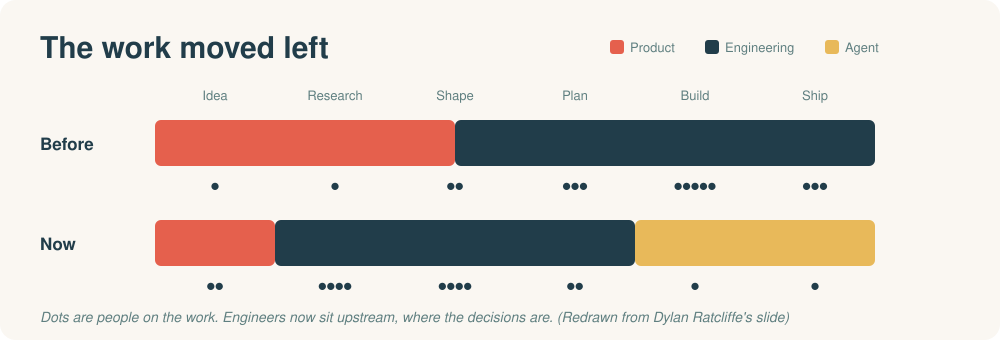
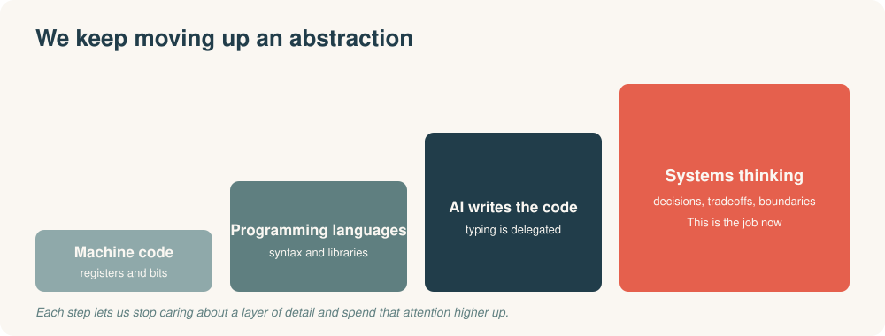
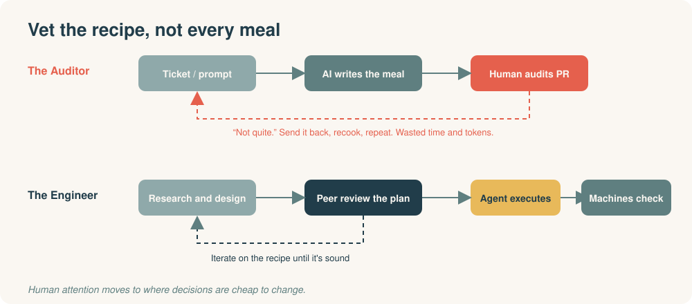
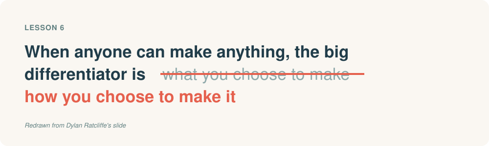
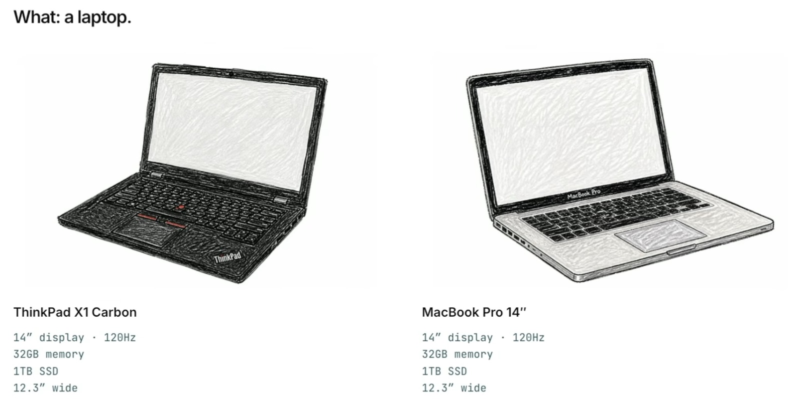
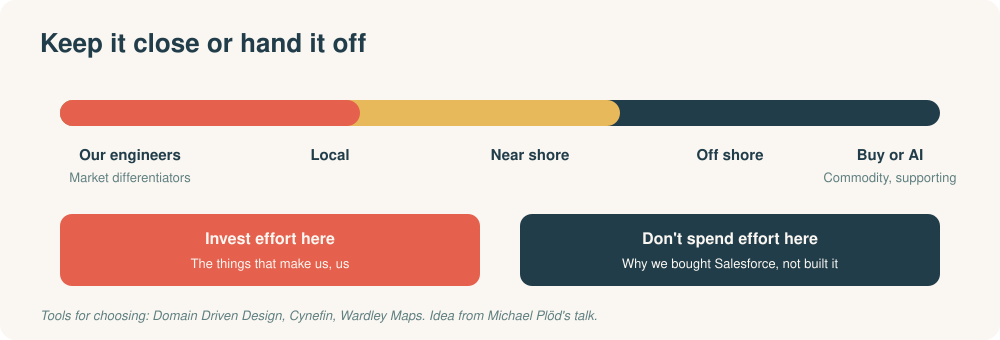

I recently spent some of my professional development budget on Fast Flow Conf in London. Agentic AI for Teams was the byline and the running theme all day, but one question sat underneath nearly every talk:
In a world where AI writes the code, what is the human in the loop to do?
My answer, after a day of talks: be the Engineer, not the Auditor. Here's how I got there.
The bottleneck moved
Dylan Ratcliffe gave what I think was the strongest talk of the day (Conway's Law in the Age of AI Agents: Why We Gave Engineers the Product Decisions). He took his small company and shifted left in how they manage their bottlenecks.
The first bottleneck was the Product handover to engineering. They found themselves at a crossroads, like many companies will (and are): do we hire more PMs, fire some engineers to rebalance, or is there an alternative?
Their alternative was to reduce the scope of what a PM does, and expand the scope of when engineering is involved.

This was glanced over in the presentation, and the devil is really in the details and the ways of working. But if we use the lens of AI writes the code, the question becomes: what do we still need an engineer to do? That is what really excited me about this potential future.
The Auditor trap
Here's where many in our industry feel we're going. AI solves the problems, the ambiguity and the implementation, and decides on tradeoffs through the process. We, the humans, audit its decisions.
The Auditor.
Dylan calls this the While Loop, and it's the worst possible option.

It's also exactly the path we walk when we see our job as picking up a Jira ticket and implementing it. If that's your job, that is what's at risk.
Side note: this sounds awfully close to a traditional junior role. Nobody discussed it, or solutionised how we could do better, and I'll come back to it below.
The Engineer, and the Until Loop
So what is our role? We solve problems. We use our knowledge to make informed decisions and balance tradeoffs, all while consulting our stakeholders and peers. That doesn't need to change.
What changes is the level we do it at. We're no longer writing machine code, and we're no longer working mainly in our modern programming languages. We're at the next level of abstraction: systems thinking.

Dylan calls this the Until Loop: human decisions first, a written plan, and the agent keeps going until the code matches the plan.
If you've ever sat a system design interview, you'll know the exercise: sketch a system at a high level so you can talk through the decisions and tradeoffs. In this shift left, more and more points at that being our quality gate. It's the PR now.
We're vetting the recipes used in the kitchen, not every produced meal. Checking each meal is an awfully wasteful use of time and resource.

Craft still matters
Don't read any of this as "the details don't matter now." They do.

What we decide to make matters less than how we choose to make it. Two laptops, identical specs, very different experiences, purely because of the HOW.

Dylan was blunt about it:
Don't let anyone tell you the HOW doesn't matter anymore. They're probably trying to sell you software that makes you the do while loop. The How is still exceptionally important.
Dylan Ratcliffe
The junior role
If the senior skill is making decisions and understanding tradeoffs, how does anyone get that experience? In my mind it comes back to teaching systems thinking and system-design style problems through pairing, trial and error, and tweaking our documentation to focus on this level of abstraction. How we approach the Junior Engineer in the age of AI is still very much a big debate, but one I think the industry needs to get traction on. I want to chew on this a bit more, and would love to hear other people's thoughts too.
It's not black and white
Dylan's talk was mostly a binary: do or do not. He created a forcing function in his company where engineers cannot manually write code or intervene with the AI. Write a clear enough implementation plan that the AI can't deviate and hand that over to it.
A different speaker, Sam Newman (Cobots, Dark Modules and Architecting for AI), came at it from the other direction but with the same pain-point. He tried to re-convince the audience that PRs were the wrong model all along. He admitted he lost that battle a long time ago, but we have a moment to re-argue it because PRs are becoming the bottleneck. So he goes back to first principles: why do we have PRs?
- Correctness
- Shared learning
- Alignment to strategy and practices
- An auditable unit of work
Through the Auditor vs Engineer lens, a lot of those reasons fall to pieces, and Sam himself called out that we've really shifted to an abstraction above.
BUT.
We don't need to be so black and white about handing something to AI or not. Sam's talk is about Cobots and Dark Modules.
Cobots
Robots built to work alongside humans for a greater outcome. Think medical-grade robotic hands: controlled by a doctor, executed by something with a steadier hand where it matters. It's a bespoke experience, the cost of getting it wrong is high, and it isn't easily template-able.
Dark factories
Named because they don't need the lights on, as there are no humans. They're repeatable processes, typically on a manufacturing line, and they matter for producing cheap, commodity things at scale.
Bring that back to code architecture: do we care about the internals of a module? It's effectively a black box. We care about the contract and the boundaries on how modules interface, not necessarily the insides.

So we've introduced nuance. Sometimes we work alongside AI to produce something. Other times we focus on a comprehensive plan and hand the implementation over.
Deciding what to keep close
One final talk really helped round out the when and why: Michael Plöd, titled Staffing and Procurement Strategies for Fast Flow. A very odd title for what I felt was the missing piece.
Michael talks about how to pick and choose the domains of a business that stay local versus those that are outsourced or bought. What led a company to purchase Salesforce, for example, over rolling its own? These decisions are often made with Domain Driven Design, the Cynefin framework and Wardley Maps.
The logic: our market differentiators should be closest to our engineers, while supporting or commodity products are simpler to buy. There are shades in between too: local, near shore, off shore. All of them are business decisions not to invest effort in the aspects that don't matter.

Put it next to Sam's cobots and dark modules and you get a lens for what to hand to AI: invest in our differentiators, and consider handing over what we care less about.
Where this leaves me
There's a lot here and still more to digest. But overall I can see a potential pathway forward for our engineering careers:
- Keepthe parts of the job that led us here.
- Removeprocess that has become ceremony.
- Use a lensto identify and invest in our market differentiators, versus what we care less about and could hand over to AI.
Go watch these
I highly suggest watching Dylan's talk and Sam Newman's. Michael Plöd also has an interesting blog on his talk, although there is a bit of crossover with the end of Sam's when he talks about modules.
-
Dylan RatcliffeConway's Law in the Age of AI Agents
-
Sam NewmanCobots, Dark Modules and Architecting for AI
-
Michael PlödStaffing and Procurement Strategies for Fast Flow
Is it worth going?
Yes, especially if you're looking to advance your career. There is immense value in seeing how other companies approach problems that aren't about the day to day of the code: how work flows, where the bottlenecks really are, and how teams and the business make decisions. If you want to move towards leadership (IC or Manager), it's well worth your time and budget.
Diagrams are my own, several redrawn from the speakers' slides. Thoughts on any of this, especially the junior role, are very welcome.